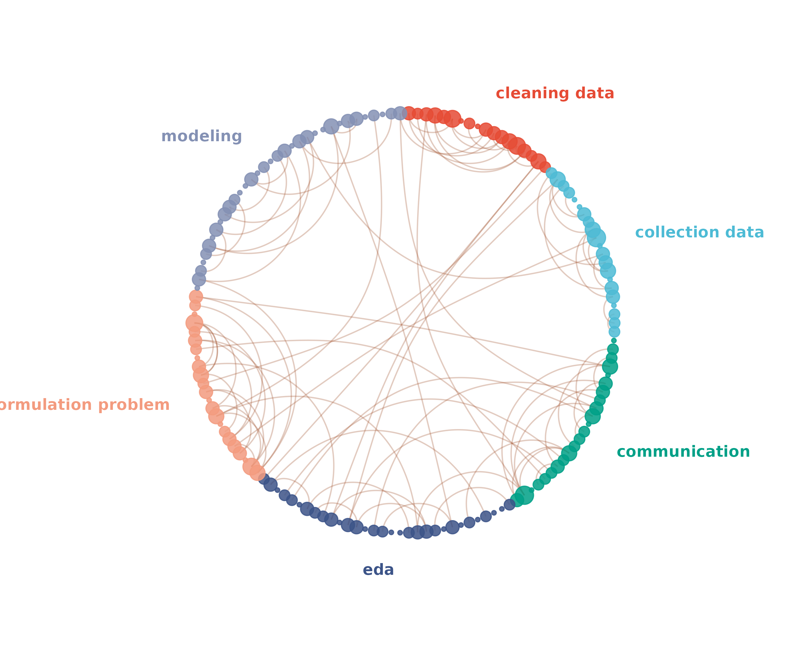
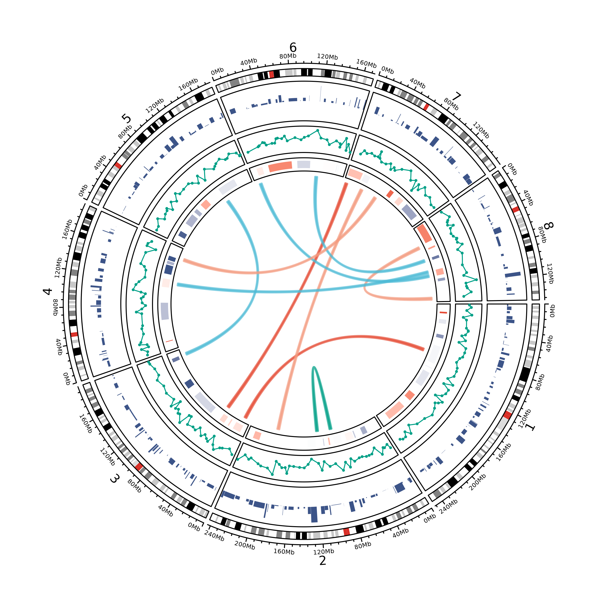
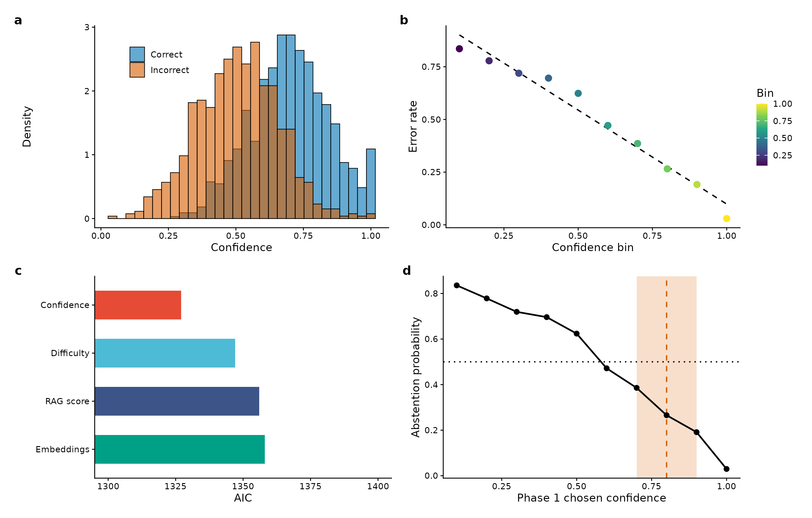
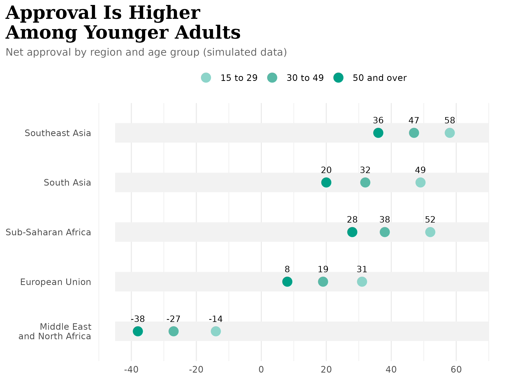
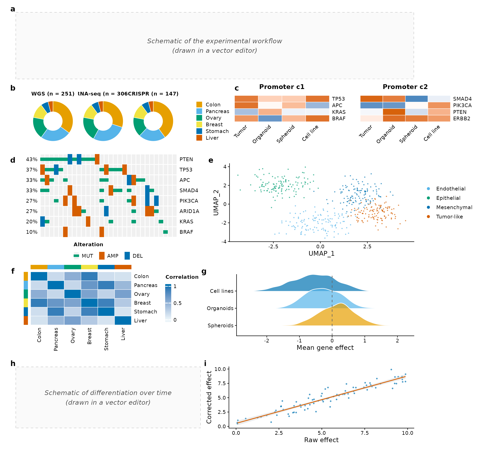

library(ggplot2)
library(themeset)
# The packages of the figures are suggested, not required: without one of them
# its chunk is shown but not run.
has_network <- requireNamespace("igraph", quietly = TRUE) && requireNamespace("ggraph", quietly = TRUE)
has_circos <- requireNamespace("circlize", quietly = TRUE)
has_patchwork <- requireNamespace("patchwork", quietly = TRUE)
has_composite <- has_patchwork && has_circos &&
requireNamespace("ComplexHeatmap", quietly = TRUE) && requireNamespace("ggridges", quietly = TRUE)Overview
Not every figure is a plot of one variable against another. This
article draws five kinds that papers and reports use often, and styles
each of them with themeset:
- a circular network, with ggraph
- a circos plot of genomic tracks, with circlize
- a four-panel figure for print, with patchwork
- a grouped dot plot, with ggplot2
- a composite figure of nine panels, with heat maps and an oncoprint from ComplexHeatmap next to ggplot2 panels
All the data are simulated, and the numbers in the figures mean
nothing. The packages for the figures are only suggested by
themeset; if one is not installed, the code of its figure
is shown but not run.
What themeset brings is the same in each: the palettes,
by name with scale_color_set() or as colors with
journal_colors(), the theme of a journal with
journal_theme(), and shades of one color for ordered groups
with journal_ramp().
1. A Circular Network
A network of 150 nodes in six groups, drawn on a circle. The nodes of a group sit side by side, which makes the blocks of the circle. The arcs inside the circle are the edges, and most of them join two nodes of one group. The size of a node is its degree, the number of edges that end in it.
library(ggraph)
set.seed(42)
steps <- c("communication", "formulation problem", "collection data",
"cleaning data", "eda", "modeling")
nodes <- data.frame(
id = 1:150,
group = sample(steps, 150, replace = TRUE, prob = c(0.2, 0.1, 0.15, 0.15, 0.15, 0.25))
)
nodes <- nodes[order(nodes$group), ] # the blocks of the circle follow the groups
# 100 edges: 75 join two nodes of one group, 25 join any two nodes
from <- sample(nodes$id, 100, replace = TRUE)
to <- sample(nodes$id, 100, replace = TRUE)
for (i in 1:75) {
members <- nodes$id[nodes$group == nodes$group[nodes$id == from[i]]]
to[i] <- members[sample.int(length(members), 1)]
}
graph <- igraph::graph_from_data_frame(data.frame(from, to), vertices = nodes, directed = FALSE)
igraph::V(graph)$degree <- igraph::degree(graph)
layout <- create_layout(graph, layout = "linear", circular = TRUE)
# a label for each group, outside the circle, at the middle of its block
angle <- tapply(seq_len(nrow(layout)), layout$group, function(i) {
atan2(mean(layout$y[i]), mean(layout$x[i]))
})
group_labels <- data.frame(group = names(angle), x = 1.18 * cos(angle), y = 1.18 * sin(angle))
group_labels$hjust <- ifelse(group_labels$x > 0.15, 0, ifelse(group_labels$x < -0.15, 1, 0.5))
ggraph(layout) +
geom_edge_arc(edge_colour = "sienna", edge_alpha = 0.3, edge_width = 0.4) +
geom_node_point(aes(color = group, size = degree), alpha = 0.85) +
geom_text(data = group_labels, aes(x, y, label = group, color = group, hjust = hjust),
fontface = "bold", size = 3.4, show.legend = FALSE) +
scale_color_set("npg") +
scale_size_continuous(range = c(1, 5)) +
coord_fixed(xlim = c(-1.75, 1.75), ylim = c(-1.35, 1.35), clip = "off") +
theme_void() +
theme(legend.position = "none")
A circular network of 150 nodes in six groups, with arcs for the edges.
-
layout = "linear", circular = TRUEplaces the nodes on a circle in the order of the data, so sortingnodesby group is what makes the blocks. - The labels are computed from the positions of the nodes, at the middle of each block, so they follow the data when the groups change.
- The colors come from
scale_color_set("npg"). The nodes and the labels share the color aesthetic, so another name fromlist_color_scales()recolors both.
2. A Circos Plot
A circos plot lays tracks of genomic data around a circle. This one has the first eight human chromosomes, whose ideogram comes with circlize, and three tracks: bars, a line with points, and blocks that run from a loss to a gain. Ten links cross the circle, as translocations do.
circlize draws with base graphics, so a ggplot2 theme does not apply
to it. The colors can still come from themeset, which keeps
the figure in step with the others of a paper.
library(circlize)
set.seed(7)
chromosomes <- paste0("chr", 1:8)
nature_colors <- journal_colors("nature")
circos.clear()
circos.par(track.height = 0.1, cell.padding = c(0.02, 0, 0.02, 0))
circos.initializeWithIdeogram(species = "hg19", chromosome.index = chromosomes)
# Track 1: gene density, as bars
gene_density <- generateRandomBed(nr = 500)
circos.genomicTrack(gene_density, numeric.column = 4, panel.fun = function(region, value, ...) {
circos.genomicRect(region, abs(value), ytop.column = 1, ybottom = 0,
col = nature_colors[4], border = NA, ...)
}, track.height = 0.15)
# Track 2: mutation frequency, as a line with points
circos.genomicTrack(gene_density, numeric.column = 4, panel.fun = function(region, value, ...) {
circos.genomicLines(region, value, type = "l", col = nature_colors[3], ...)
circos.genomicPoints(region, value, cex = 0.4, pch = 16, col = nature_colors[3], ...)
}, track.height = 0.1)
# Track 3: copy number, from a loss to a gain, through white
copy_number <- generateRandomBed(nr = 100)
gain_loss <- colorRamp2(c(-1, 0, 1), c(nature_colors[4], "white", nature_colors[1]))
circos.genomicTrack(copy_number, numeric.column = 4, panel.fun = function(region, value, ...) {
circos.genomicRect(region, value, col = gain_loss(pmax(pmin(value[[1]], 1), -1)),
border = NA, ...)
}, track.height = 0.05)
# Links: ten regions joined to ten others, all on chromosomes 1 to 8
chromosome_length <- read.chromInfo(species = "hg19")$chr.len[chromosomes]
random_regions <- function(n, width = 4e6) {
chr <- sample(chromosomes, n, replace = TRUE)
start <- vapply(chr, function(chr) sample.int(chromosome_length[[chr]] - width, 1), numeric(1))
data.frame(chr = chr, start = start, end = start + width)
}
link_colors <- adjustcolor(nature_colors[c(1, 2, 3, 5, 6)][sample(5, 10, replace = TRUE)], alpha.f = 0.7)
circos.genomicLink(random_regions(10), random_regions(10), col = link_colors, lwd = 2)
A circos plot of eight chromosomes with three data tracks and ten links.
- circlize keeps its settings in global state:
circos.clear()before a plot and after it, so that the next one starts clean. -
generateRandomBed()makes the simulated regions. They are drawn at random over the whole genome, and only the eight chromosomes of the ideogram show. The links are made by hand for that reason: a link needs both of its ends on a chromosome that is drawn. -
journal_colors("nature")gives the palette as colors. The gain and loss track runs between two of them, through white, so its two ends are the colors of the other tracks.
3. A Figure of Four Panels
A figure for print: four panels with tags, assembled with patchwork.
Every panel has the theme of Nature,
journal_theme("nature"), so the text is 7 pt, and the
figure is 183 mm wide, the double column of the journal.
The colors of the correct and the incorrect group are two Okabe-Ito colors, which readers with color-vision deficiency can tell apart. A red and a green would not be safe for them.
library(patchwork)
set.seed(123)
confidence <- data.frame(
Confidence = pmin(pmax(c(rnorm(1000, 0.7, 0.15), rnorm(800, 0.5, 0.15)), 0), 1),
Status = factor(rep(c("Correct", "Incorrect"), c(1000, 800)))
)
bins <- data.frame(
Confidence_bin = seq(0.1, 1, by = 0.1),
Error_rate = seq(0.9, 0.1, length.out = 10) + rnorm(10, 0, 0.05)
)
models <- data.frame(
Feature = c("Confidence", "Difficulty", "RAG score", "Embeddings"),
AIC = c(1327, 1347, 1356, 1358)
)
okabe_ito <- journal_colors("cell")
status <- c(Correct = okabe_ito[5], Incorrect = okabe_ito[6])
nature_theme <- journal_theme("nature")
# a: two overlapping histograms
panel_a <- ggplot(confidence, aes(Confidence, fill = Status)) +
geom_histogram(aes(y = after_stat(density)), position = "identity", bins = 30,
alpha = 0.6, colour = "black", linewidth = 0.2) +
scale_fill_manual(values = status) +
labs(x = "Confidence", y = "Density") +
nature_theme +
theme(legend.position = "inside", legend.position.inside = c(0.22, 0.82),
legend.title = element_blank())
# b: points that follow a fitted line, colored by their position
panel_b <- ggplot(bins, aes(Confidence_bin, Error_rate)) +
geom_smooth(method = "lm", formula = y ~ x, colour = "black", linetype = "dashed",
linewidth = 0.4, se = FALSE) +
geom_point(aes(colour = Confidence_bin), size = 1.8) +
scale_colour_viridis_c(guide = guide_colourbar(barheight = unit(14, "mm"),
barwidth = unit(2.5, "mm"))) +
labs(x = "Confidence bin", y = "Error rate", colour = "Bin") +
nature_theme
# c: horizontal bars, on an axis that starts at 1300
panel_c <- ggplot(models, aes(AIC, reorder(Feature, -AIC), fill = Feature)) +
geom_col(orientation = "y", width = 0.6) +
coord_cartesian(xlim = c(1300, 1400)) +
scale_fill_set("npg") +
labs(x = "AIC", y = NULL) +
nature_theme +
theme(legend.position = "none")
# d: a line, with a shaded interval and two reference lines
panel_d <- ggplot(bins, aes(Confidence_bin, Error_rate)) +
annotate("rect", xmin = 0.7, xmax = 0.9, ymin = -Inf, ymax = Inf, alpha = 0.2, fill = okabe_ito[6]) +
geom_vline(xintercept = 0.8, linetype = "dashed", colour = okabe_ito[6], linewidth = 0.4) +
geom_hline(yintercept = 0.5, linetype = "dotted", linewidth = 0.4) +
geom_line(linewidth = 0.5) +
geom_point(size = 1.4) +
labs(x = "Phase 1 chosen confidence", y = "Abstention probability") +
nature_theme
(panel_a | panel_b) / (panel_c | panel_d) +
plot_annotation(tag_levels = list(journal_tags("nature", 4)))
A four-panel figure in the theme of Nature: overlapping histograms, a scatter plot with a fitted line, horizontal bars and a line with a marked interval.
The panels are separate ggplots, so journal_check() can
read them. It is given the list of the four, with the double column and
the height of the figure:
journal_check(list(panel_a, panel_b, panel_c, panel_d), "nature", column = "double", height = 117)
#> Check against Nature: warn
#> check status value limit note
#> width info 183 mm double column
#> height pass 117 mm <= 170 mm
#> smallest text pass 5.6 pt >= 5 pt axis.text.x
#> largest text pass 7.0 pt <= 7 pt axis.title.x
#> thinnest line pass 0.57 pt >= 0.25 pt layer 1 (GeomBar)
#> colors warn 4.7 >= 10 (CIEDE2000) up to 10 colors; closest pair with protan vision; palette = "okabe_ito" is made for this- Each panel carries the theme of the journal, and patchwork draws the
tags with the
plot.tagelement of it: bold, 8 pt, in lowercase for Nature.journal_tags("science", 4)would give capitals. - The axis of panel c starts at 1300, so the lengths of the bars do not start at zero. That is a choice that a figure has to state in its legend.
- The four panels draw 16 colors between them, among them the gradient of panel b, so the check does not compare them, as its note says.
- A Multi-Panel Figure assembles panels with cowplot instead, and restyles the whole figure by changing the name of a set.
4. A Grouped Dot Plot
One row for each region, with a dot for each of three age groups, on
a grey strip, and the value above each dot. The age groups have an
order, so their colors are three shades of one color, from light to
dark. journal_ramp() makes them from a color of a journal
palette.
regions <- c("Southeast Asia", "South Asia", "Sub-Saharan Africa", "European Union",
"Middle East\nand North Africa")
ages <- c("15 to 29", "30 to 49", "50 and over")
approval <- data.frame(
Region = factor(rep(regions, times = 3), levels = rev(regions)),
Age_Group = factor(rep(ages, each = 5), levels = ages),
Net_Approval = c(58, 49, 52, 31, -14, # 15 to 29
47, 32, 38, 19, -27, # 30 to 49
36, 20, 28, 8, -38) # 50 and over
)
strips <- data.frame(Region = factor(regions, levels = rev(regions)))
ggplot(approval, aes(Net_Approval, Region)) +
# the grey strips: one for each region, not one for each dot
geom_linerange(data = strips, aes(y = Region, xmin = -45, xmax = 70), inherit.aes = FALSE,
colour = "grey95", linewidth = 9) +
geom_point(aes(colour = Age_Group), size = 4) +
geom_text(aes(label = Net_Approval), vjust = -1.5, size = 3) +
scale_colour_manual(values = journal_ramp("nature", 3, color = 3, light = 0.55)) +
scale_x_continuous(limits = c(-45, 70), breaks = seq(-40, 60, 20)) +
labs(title = "Approval Is Higher\nAmong Younger Adults",
subtitle = "Net approval by region and age group (simulated data)",
x = NULL, y = NULL) +
theme_minimal() +
theme(
legend.position = "top",
legend.title = element_blank(),
panel.grid.major.y = element_blank(),
plot.title = element_text(size = 18, face = "bold", family = "serif"),
plot.title.position = "plot",
plot.subtitle = element_text(size = 10, colour = "grey40")
)
A grouped dot plot of net approval by region and age group, in three shades of one color.
-
journal_ramp("nature", 3, color = 3, light = 0.55)shades the third color of the Nature palette.lightis the share of white in the lightest shade; a smaller number gives darker dots on the grey strips. - The strips come from their own data frame, with
inherit.aes = FALSE. Drawn from the data of the dots they would be drawn three times each. - The title has a line break (
\n) and a serif face.plot.title.position = "plot"aligns the title and the subtitle with the whole plot, not with the panel.
5. A Composite Figure of Nine Panels
The kind of figure that a paper on patient-derived models ends with: nine panels in five rows. Two are schematics, which are drawn in a vector editor, so only a placeholder keeps their place. The others are donut charts, two small heat maps, an oncoprint of mutations, a UMAP, a correlation heat map, ridgelines and a scatter plot with a fitted line.
Some panels are ggplot2 plots and some are drawn by ComplexHeatmap
with grid graphics. patchwork::wrap_elements() turns a grid
graphic into a patch, so that patchwork lays out all nine and tags them.
The figure is 183 mm wide, the double column of Nature, and 170 mm high,
its maximum height. One palette, Okabe-Ito, colors every category, so
that the figure keeps to the colors that the guide of Nature lists.
library(patchwork)
library(ComplexHeatmap)
library(ggridges)
library(grid)
set.seed(42)
okabe_ito <- journal_colors("cell")
nature_theme <- journal_theme("nature")
text_pt <- 5.6 # the size of axis text in the theme of Nature; the heat maps use it too
tag_style <- theme(plot.tag = element_text(size = 8, face = "bold"))
lineages <- c("Colon", "Pancreas", "Ovary", "Breast", "Stomach", "Liver")
lineage_colors <- setNames(okabe_ito[seq_along(lineages)], lineages)
# a and h: placeholders for the schematics
placeholder <- function(text) {
ggplot() +
annotate("rect", xmin = 0, xmax = 1, ymin = 0, ymax = 1, fill = "grey98",
colour = "grey70", linetype = "dashed", linewidth = 0.3) +
annotate("text", x = 0.5, y = 0.5, label = text, size = 2.5, fontface = "italic", colour = "grey30") +
scale_x_continuous(expand = c(0, 0)) +
scale_y_continuous(expand = c(0, 0)) +
theme_void(base_size = 7) +
tag_style
}
fig_a <- placeholder("Schematic of the experimental workflow\n(drawn in a vector editor)")
fig_h <- placeholder("Schematic of differentiation over time\n(drawn in a vector editor)")
# b: one donut chart for each kind of data, in one plot with three facets
donuts <- data.frame(
data = factor(rep(c("WGS", "RNA-seq", "CRISPR"), each = 6), levels = c("WGS", "RNA-seq", "CRISPR"),
labels = c("WGS (n = 251)", "RNA-seq (n = 306)", "CRISPR (n = 147)")),
lineage = factor(rep(lineages, 3), levels = lineages),
n = c(35, 25, 18, 12, 6, 4, 30, 28, 20, 12, 6, 4, 40, 22, 16, 12, 6, 4)
)
donuts$fraction <- ave(donuts$n, donuts$data, FUN = function(n) n / sum(n))
donuts$ymax <- ave(donuts$fraction, donuts$data, FUN = cumsum)
donuts$ymin <- donuts$ymax - donuts$fraction
fig_b <- ggplot(donuts) +
geom_rect(aes(ymax = ymax, ymin = ymin, xmax = 4, xmin = 2.4, fill = lineage), colour = "white", linewidth = 0.2) +
coord_polar(theta = "y") +
xlim(c(1, 4)) +
facet_wrap(vars(data)) +
scale_fill_manual(values = lineage_colors, name = NULL) +
theme_void(base_size = 7) +
theme(strip.text = element_text(size = text_pt, face = "bold"), legend.text = element_text(size = text_pt),
legend.key.size = unit(2.5, "mm"), panel.spacing = unit(0, "mm")) +
tag_style
# c: two small heat maps side by side, drawn by ComplexHeatmap into one grid graphic
diverging <- circlize::colorRamp2(c(-1, 0, 1), c(okabe_ito[5], "white", okabe_ito[6]))
small_heatmap <- function(genes, title) {
values <- matrix(runif(16, -1, 1), nrow = 4,
dimnames = list(genes, c("Tumor", "Organoid", "Spheroid", "Cell line")))
Heatmap(values, col = diverging, name = title, show_heatmap_legend = FALSE,
cluster_rows = FALSE, cluster_columns = FALSE,
column_title = title, column_title_gp = gpar(fontsize = 7, fontface = "bold"),
row_names_gp = gpar(fontsize = text_pt), column_names_gp = gpar(fontsize = text_pt),
column_names_rot = 45, rect_gp = gpar(col = "white", lwd = 0.5))
}
heatmaps <- grid.grabExpr({
pushViewport(viewport(layout = grid.layout(1, 2)))
pushViewport(viewport(layout.pos.col = 1))
draw(small_heatmap(c("TP53", "APC", "KRAS", "BRAF"), "Promoter c1"), newpage = FALSE)
popViewport()
pushViewport(viewport(layout.pos.col = 2))
draw(small_heatmap(c("SMAD4", "PIK3CA", "PTEN", "ERBB2"), "Promoter c2"), newpage = FALSE)
popViewport(2)
})
fig_c <- wrap_elements(full = heatmaps) + tag_style
# d: an oncoprint of 8 genes in 30 samples, without the bar plots at its edges
genes <- c("TP53", "KRAS", "APC", "SMAD4", "BRAF", "PIK3CA", "ARID1A", "PTEN")
alterations <- matrix(
sample(c("", "MUT", "AMP", "DEL"), length(genes) * 30, replace = TRUE, prob = c(0.72, 0.15, 0.08, 0.05)),
nrow = length(genes), dimnames = list(genes, paste0("S", 1:30))
)
alteration_colors <- c(MUT = okabe_ito[3], AMP = okabe_ito[6], DEL = okabe_ito[5])
alter_fun <- list(
background = function(x, y, w, h) grid.rect(x, y, w, h, gp = gpar(fill = "grey94", col = "white")),
MUT = function(x, y, w, h) grid.rect(x, y, w, h * 0.33, gp = gpar(fill = alteration_colors[["MUT"]], col = NA)),
AMP = function(x, y, w, h) grid.rect(x, y, w, h, gp = gpar(fill = alteration_colors[["AMP"]], col = NA)),
DEL = function(x, y, w, h) grid.rect(x, y, w, h, gp = gpar(fill = alteration_colors[["DEL"]], col = NA))
)
oncoprint <- oncoPrint(
alterations, alter_fun = alter_fun, col = alteration_colors, show_column_names = FALSE,
top_annotation = NULL, right_annotation = NULL,
row_names_gp = gpar(fontsize = text_pt), pct_gp = gpar(fontsize = text_pt),
# the labels of this legend can only be sized if `at` and `labels` are given too
heatmap_legend_param = list(title = "Alteration", nrow = 1,
at = names(alteration_colors), labels = names(alteration_colors),
title_gp = gpar(fontsize = text_pt, fontface = "bold"),
labels_gp = gpar(fontsize = text_pt),
grid_height = unit(2, "mm"), grid_width = unit(2, "mm"))
)
# the extra padding on the left keeps the tag of the panel off the percentages
fig_d <- wrap_elements(full = grid.grabExpr(
draw(oncoprint, heatmap_legend_side = "bottom", padding = unit(c(1, 7, 1, 1), "mm"))
)) + tag_style
# e: a UMAP of four cell types
umap <- data.frame(
UMAP_1 = c(rnorm(120, -2, 0.8), rnorm(120, 2, 0.7), rnorm(120, 0, 0.9), rnorm(120, 3, 0.6)),
UMAP_2 = c(rnorm(120, 2, 0.8), rnorm(120, 1, 0.7), rnorm(120, -2, 0.8), rnorm(120, -1, 0.7)),
Cell_type = rep(c("Epithelial", "Mesenchymal", "Endothelial", "Tumor-like"), each = 120)
)
fig_e <- ggplot(umap, aes(UMAP_1, UMAP_2, colour = Cell_type)) +
geom_point(alpha = 0.7, size = 0.6, stroke = 0) +
scale_colour_manual(values = okabe_ito[c(2, 3, 5, 6)]) +
guides(colour = guide_legend(override.aes = list(size = 1.5, alpha = 1))) +
labs(colour = NULL) +
nature_theme
# f: a correlation heat map, with the lineage colors of panel b on its top and left
correlation <- matrix(runif(36, 0.1, 0.95), nrow = 6, dimnames = list(lineages, lineages))
correlation[lower.tri(correlation)] <- t(correlation)[lower.tri(correlation)]
diag(correlation) <- 1
lineage_strip <- function(which) {
HeatmapAnnotation(lineage = lineages, col = list(lineage = lineage_colors), which = which,
show_legend = FALSE, show_annotation_name = FALSE, simple_anno_size = unit(1.6, "mm"))
}
correlation_map <- Heatmap(
correlation, name = "Correlation",
col = circlize::colorRamp2(c(0, 0.5, 1), journal_ramp("cell", 3, color = 5, light = 0.92)),
cluster_rows = FALSE, cluster_columns = FALSE,
top_annotation = lineage_strip("column"), left_annotation = lineage_strip("row"),
row_names_side = "right", row_names_gp = gpar(fontsize = text_pt), column_names_gp = gpar(fontsize = text_pt),
rect_gp = gpar(col = "white", lwd = 0.5),
heatmap_legend_param = list(title_gp = gpar(fontsize = text_pt, fontface = "bold"),
labels_gp = gpar(fontsize = text_pt),
grid_width = unit(2, "mm"), legend_height = unit(14, "mm"))
)
fig_f <- wrap_elements(full = grid.grabExpr(draw(correlation_map, padding = unit(c(1, 7, 1, 1), "mm")))) + tag_style
# g: ridgelines
effects <- data.frame(
Model = factor(rep(c("Cell lines", "Organoids", "Spheroids"), each = 400),
levels = c("Spheroids", "Organoids", "Cell lines")),
Effect = c(rnorm(400, -0.6, 0.65), rnorm(400, -0.3, 0.5), rnorm(400, 0.1, 0.55))
)
fig_g <- ggplot(effects, aes(Effect, Model, fill = Model)) +
geom_density_ridges(alpha = 0.7, scale = 1.3, rel_min_height = 0.01, colour = "white", linewidth = 0.3) +
geom_vline(xintercept = 0, linetype = "dashed", colour = "grey40", linewidth = 0.3) +
scale_fill_manual(values = c("Cell lines" = okabe_ito[5], Organoids = okabe_ito[2], Spheroids = okabe_ito[1])) +
labs(x = "Mean gene effect", y = NULL) +
nature_theme +
theme(legend.position = "none")
# i: a scatter plot with a fitted line
corrected <- data.frame(Raw = runif(80, 0, 10), Noise = rnorm(80, 0, 0.8))
corrected$Corrected <- corrected$Raw * 0.82 + corrected$Noise + 0.5
fig_i <- ggplot(corrected, aes(Raw, Corrected)) +
geom_point(colour = okabe_ito[5], alpha = 0.7, size = 0.8, stroke = 0) +
geom_smooth(method = "lm", formula = y ~ x, colour = okabe_ito[6], fill = "grey80", linewidth = 0.4) +
labs(x = "Raw effect", y = "Corrected effect") +
nature_theme
fig_a / (fig_b | fig_c) / (fig_d | fig_e) / (fig_f | fig_g) / (fig_h | fig_i) +
plot_layout(heights = c(1.2, 0.9, 1.4, 1.1, 1.1)) +
plot_annotation(tag_levels = list(journal_tags("nature", 9)))
A composite figure of nine panels: two schematic placeholders, donut charts, two small heat maps, an oncoprint, a UMAP, a correlation heat map, ridgelines and a scatter plot.
journal_check() reads the ggplot panels, and it is given
the size of the figure. The heat maps and the oncoprint are grid
graphics that it cannot read; their text is set to the same 5.6 pt by
hand, with text_pt.
journal_check(list(fig_b, fig_e, fig_g, fig_i), "nature", column = "double", height = 170)
#> Check against Nature: pass
#> check status value limit note
#> width info 183 mm double column
#> height pass 170 mm <= 170 mm
#> smallest text pass 5.6 pt >= 5 pt legend.text
#> largest text pass 7.0 pt <= 7 pt legend.title
#> thinnest line pass 0.57 pt >= 0.25 pt layer 1 (GeomRect)
#> colors pass 11.5 >= 10 (CIEDE2000) up to 6 colors; closest pair with deutan vision-
wrap_elements(full = )takes the grid graphic thatgrid.grabExpr()captures fromdraw(). Patchwork tags it like a plot. The tags of the heat maps and of the panels drawn withtheme_void()come out larger and not bold, unlesstag_style(bold, 8 pt) is added to each of them; the panels withjournal_theme()have that style already. - The three donut charts are one ggplot with three facets: a single
plot gets a single tag and a shared legend.
coord_polar(theta = "y")bends the bars ofgeom_rect()into rings, andxlim()leaves the hole in the middle. - The colors of the lineages are one named vector,
lineage_colors. Panel b fills the rings with it and panel f uses the same colors for the strips on its edges, so a lineage keeps its color across the figure. - The sequential scale of panel f is three shades of
one Okabe-Ito color, from
journal_ramp(); the two ends of the scale of panel c are two other colors of the palette, through white. - The check compares the colors of each panel with each other, not those of different panels, since every panel has its own legend. The panels here share Okabe-Ito, which keeps its colors apart for every kind of vision.
6. Packages and Credits
themeset calls these packages by name, and the work is
theirs. They are suggested, so themeset works without
them.
| Package | What it draws here | Authors |
|---|---|---|
| ggraph | the circular network | Thomas Lin Pedersen |
| igraph | the graph of the network | Gábor Csárdi, Tamás Nepusz, Vincent Traag, Szabolcs Horvát, Fabio Zanini, Daniel Noom, Kirill Müller, David Schoch and Maëlle Salmon |
| circlize | the circos plot and its ideogram | Zuguang Gu |
| patchwork | the four-panel figure and the layout of the composite figure | Thomas Lin Pedersen |
| ComplexHeatmap | the heat maps and the oncoprint of the composite figure | Zuguang Gu |
| ggridges | the ridgelines of the composite figure | Claus O. Wilke |
The palettes are those of ggsci (npg) and, for the
Okabe-Ito colors, of base R; see Comparing Figures Across Journals for
their credits.
Summary
| To draw | Use |
|---|---|
| A circular network |
ggraph(layout) with
create_layout(graph, "linear", circular = TRUE),
geom_edge_arc() and geom_node_point()
|
| A circos plot |
circos.initializeWithIdeogram() and
circos.genomicTrack() of circlize, with colors from
journal_colors()
|
| A figure of several panels | patchwork, with journal_theme() on each panel and tags
from journal_tags()
|
| A composite of ggplot2 and ComplexHeatmap panels |
wrap_elements(full = grid.grabExpr(draw(<heat map>)))
in a patchwork layout |
| Check the panels | journal_check(list(a, b, c, d), "nature", column = "double", height = 170) |
| Colors for ordered groups | journal_ramp("nature", 3) |
| A palette by name | scale_color_set("npg") |